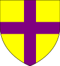
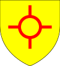

| Name | Prt. | CoA | Lifespan | Notes |
| Arthur |
|
|
1362–1363
Aged 1 |
|
| Eva |
 |
 |
1365–1419
Aged 54 |
Married Humphrey Stotfold in 1380
- Masota (1384–1390)
- Avice (1385–1450)
- Estrild (1388–1446)
- Runild (1389–1392)
|
| Godelot IV |
 |
 |
1366–1429
Aged 63 |
Wives:- Avice Cannock (m. 1384 d. 1386)
- Avelina Melton (m. 1386 d. 1388)
- Eva Barton (m. 1390 d. 1429)
|
| Constantine |
 |
|
1373–1421
Aged 48 |
Wives:- Alviva Melton (m. 1392 d. 1393)
- Rose Ampthill (m. 1394 d. 1421)
|
| Runild |
 |
|
1374–1421
Aged 47 |
Married Alexander Manchester in 1399
|
| Estrild |
|
 |
1375–1432
Aged 57 |
Married Gamel Douglas in 1388
- Runild (1393–1453)
- Constantine (1399–1400)
- Aldiva (1400–1406)
- Denise (1405–1406)
|
| Eustace |
|
|
1377–1378
Aged 1 |
|
| Avice |
|
|
1378–1379
Aged 1 |
|
| Arthur |
 |
|
1379–1440
Aged 61 |
Married Alviva Workington in 1426
|
| Eustace |
|
|
1380–1435
Aged 55 |
Married Estrild Barton in 1403
- Eva (1412–1414)
- Hugo (1415)
- Hugo (1418–1475)
- Lagot (1420–1476)
- Katherine (1427–1430)
- Aldiva (1431–1440)
- Estrild (1432–1433)
- Katherine (1433–1476)
- Avice (1434–PRSN)
- Albin (1436–1498)
|
| Isaac |
|
|
1381–1430
Aged 49 |
|
| Avice |
|
|
1383–1449
Aged 66 |
Married Ioco Melton in 1399
- Ioco (1403–1406)
- Ioco (1407–1409)
- Ioco (1412–1482)
- Godfrey (1416–1470)
- Avice (1428–1434)
|
| Lagot |
|
|
1384–1404
Aged 20 |
|
| Hugo |
|
|
1386–1438
Aged 52 |
Married Alviva Westminster in 1424
|
| Aldiva |
|
|
1390–1424
Aged 34 |
Married Letard Bingham in 1404
- Letard (1412–1464)
- Estrild (1413–1463)
- Denise (1419–1425)
- Alviva (1420–1483)
- Ralph (1421–1475)
- Runild (1424–1429)
|
| Stephen |
|
|
1392–1448
Aged 56 |
Married Alviva Westminster in 1438
- Isaac (1444–1460)
- Lagot (1445–1446)
|